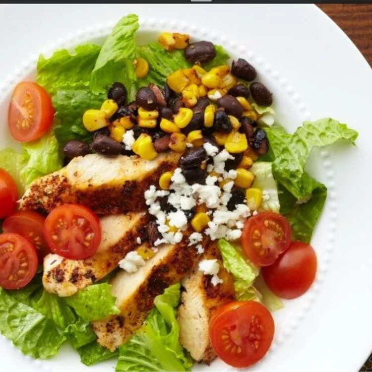

Home
BBQ Chopped Salad

Description
This healthy salad was adapted from one I ate at California Pizza Kitchen. The lime juice intensified by the jicama draws out the flavor of the vegetables, so an oil- or cream-based dressing is not necessary.
Ingredients
- 1x head romaine lettuce, chopped
- 1x 15 ounce can black beans, rinsed and drained
- 1x 15 ounce can sweet corn, drained
- 1x red bell pepper, chopped
- 1x cup peeled, shredded jicama
- 1x cup shredded carrots
- 4x scallions, thinly sliced
- 0.25x cup chopped fresh basil
- 0.25x cup chopped fresh cilantro
- 3x limes, divided
- 1x 6 ounce package cooked chicken breast strips
- 2x tablespoons barbeque sauce
- 1x avocado - peeled, pitted, and cubed
Steps
- Mix lettuce, black beans, corn, red bell pepper, jicama, carrots, scallions, basil, and cilantro together in a large bowl. Juice 2 limes and drizzle juice over salad; toss lightly.
- Combine chicken and barbeque sauce in a microwave-safe bowl; heat in microwave until chicken is warmed through, about 45 seconds.
- Arrange chicken and avocado on top of the salad and squeeze remaining lime over salad.